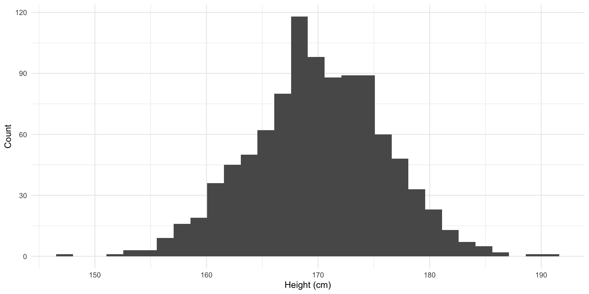

Research Design
Set up
Introduction
Political scientists use empirical analysis to determine whether their theories play out in the real-world. Broadly, there are two ways to do this: experiments and observational studies. In experiments, the researcher controls how important variables change, observing their effects in a controlled setting. In observational studies, the researcher has no control over how important variables change. They must simply observe these changes and their effects.
Experiments remain the “gold standard” for evaluating causal explanations of outcomes. However, observational studies are much more common. We will discuss both this week.
Experiments
In The Observer Effect in International Politics: Evidence from a Natural Experiment, Hyde (2007) explores whether international election monitoring increases the chances that those elections will be free and fair. Specifically, she wants to determine whether international monitors reduce the prevalence of fraud occurring at the polling stations to which they are assigned. To test this, she used an experiment.
During the 2003 presidential elections in Armenia, international monitors were randomly assigned to polling stations. If election monitors significantly reduce a bad actor’s ability to rig an election on election day, their vote share in monitored booths should be lower than that in which their behavior was not observed. In her words (page 39):
“If the presence of international observers causes a reduction in election-day fraud, the effect of observers should be visible at the subnational level by comparing polling stations that were visited by observers with those that were not visited. More specifically, if international monitoring reduces election day fraud directly, all else held equal, the cheating parties should gain less of their ill-gotten vote share in polling stations that were visited by international monitors.”
In summary, following from her theory (provided in the paper), she argues that the presence of international observers at a polling station causes less election-day fraud at that station:
\[ Election\ monitoring \rightarrow Less\ election\ day\ fraud \]
How can experiments help prove this? Hyde was interested in estimating the effect of election monitoring on each individual polling station. Was the vote share the cheating parties received at a monitored station significantly smaller than it would have been if the monitors were not there? Unfortunately for Hyde (and all researchers hoping to identify the causes of outcomes of interest), we cannot observe the counter-factual: the vote share cheating parties would have received if the monitor were not there.
Ideally, we could operate in parallel worlds: one in which all stations were monitored, and one in which none were. For each polling station, \(i\), of the 1,763 that were set up for the 2003 election we would record the vote share the cheating party received without election monitors and that they received with election monitors:
I made these data up! These are not the data collected by Hyde (2007). I have made them extreme for illustrative purposes.
vec_cheating_party_monitoring <- round(rbeta(1763, 2, 11) * 100, 2)
vec_cheating_party_no_monitoring <- round(rbeta(1763, 6, 4) * 100, 2)
sim_election_monitoring <- tibble(station_id = 1:1763,
cheating_party_monitoring = vec_cheating_party_monitoring,
cheating_party_no_monitoring = vec_cheating_party_no_monitoring)
sim_election_monitoring# A tibble: 1,763 × 3
station_id cheating_party_monitoring cheating_party_no_monitoring
<int> <dbl> <dbl>
1 1 14.8 50.2
2 2 19.1 58.3
3 3 20.8 59.6
4 4 10.0 61.2
5 5 19.4 82.1
6 6 25.9 63.5
7 7 21.3 68.0
8 8 8.19 68.3
9 9 36.5 68.9
10 10 2.54 78.1
# ℹ 1,753 more rowsWe could then compare these two vote shares and determine whether the election monitors substantially drove down the cheating parties’ vote shares:
sim_election_monitoring |>
mutate(difference = cheating_party_monitoring - cheating_party_no_monitoring)# A tibble: 1,763 × 4
station_id cheating_party_monitoring cheating_party_no_monitoring difference
<int> <dbl> <dbl> <dbl>
1 1 14.8 50.2 -35.4
2 2 19.1 58.3 -39.2
3 3 20.8 59.6 -38.8
4 4 10.0 61.2 -51.1
5 5 19.4 82.1 -62.8
6 6 25.9 63.5 -37.6
7 7 21.3 68.0 -46.7
8 8 8.19 68.3 -60.1
9 9 36.5 68.9 -32.4
10 10 2.54 78.1 -75.6
# ℹ 1,753 more rowsThe election monitors are the only difference between these two parallel worlds. Therefore, we could definitively state that they caused these differences in vote shares. Those differences are large, so we could confidently say that election monitors substantially reduce the vote share received by the cheating party at each polling station.
We cannot, of course, create parallel worlds. We only observe the factual outcome: each party’s vote share at a given station under whichever condition (monitored or not) it received in reality. We never observe the counter-factual outcome: each party’s vote share at a given station under the other condition.
In Hyde’s case, she only has the cheating party’s vote share at a given station under whichever condition it received:
vec_monitored <- rbinom(1763, 1, 0.5)
sim_factual_monitoring <- sim_election_monitoring |>
mutate(monitored = vec_monitored,
cheating_party_monitoring = if_else(monitored == 1, cheating_party_monitoring, NA_real_),
cheating_party_no_monitoring = if_else(monitored == 0, cheating_party_no_monitoring, NA_real_)) |>
relocate(monitored, .after = station_id)
sim_factual_monitoring# A tibble: 1,763 × 4
station_id monitored cheating_party_monitoring cheating_party_no_monitoring
<int> <int> <dbl> <dbl>
1 1 0 NA 50.2
2 2 0 NA 58.3
3 3 0 NA 59.6
4 4 0 NA 61.2
5 5 1 19.4 NA
6 6 0 NA 63.5
7 7 1 21.3 NA
8 8 1 8.19 NA
9 9 0 NA 68.9
10 10 0 NA 78.1
# ℹ 1,753 more rowsSo, how do we work out whether election monitors deter or prevent election-day fraud?
Average causal effects
We need to find good approximations of the counter-factuals for each polling station. To do this, we need to move away from focusing on the individual polling stations and, instead, look at the average vote share across all stations that were monitored compared to that across all stations that were not monitored.
Let’s look back at our impossible parallel worlds:
sim_election_monitoring# A tibble: 1,763 × 3
station_id cheating_party_monitoring cheating_party_no_monitoring
<int> <dbl> <dbl>
1 1 14.8 50.2
2 2 19.1 58.3
3 3 20.8 59.6
4 4 10.0 61.2
5 5 19.4 82.1
6 6 25.9 63.5
7 7 21.3 68.0
8 8 8.19 68.3
9 9 36.5 68.9
10 10 2.54 78.1
# ℹ 1,753 more rowsThe cheating party’s average vote share if all stations were monitored is 15.25%.
In R:
And its average vote share if no stations were monitored is a whopping 60.13%.
In R:
We can conclude from these parallel worlds that, on average, election monitors caused a 44.87% reduction in the cheating party’s vote share at any given polling station.
Again, we can’t split the world into two parallel worlds for our political science experiments. Instead we need to find an appropriate proxy for those counter-factual vote shares. The best way to do this is using a randomized experiment (also sometimes referred to as a randomized control trial).
The ultimate goal is to find two groups that are, on average, identical prior to the treatment. Then, once we treat one of the groups, we can infer that any differences between these two previously identical groups were caused by our treatment.
The best way to do this is to randomly assign individual actors to a treatment or control group. Here, we randomly decide whether each given polling station will be monitored. Above, I used R to do this (using the rbinom() function). Those stations that will be monitored make up the treatment group. Those that will not be monitored make up the control group.
Why is randomization the best way to ensure that both of our groups are identical prior to treatment? Because it ensures that the only thing that systematically distinguishes the treatment from the control group is that those stations will be monitored. Yes, there are differences between each individual polling station (for example, its geographic location, size, or turn-out) that will have an effect on each party’s vote share. But, because the treatment was dispursed randomly, the two groups (monitored or not) can be compared, on average. Random treatment makes the treatment and control groups, on average, identical to each other.1
To illustrate this point, let’s briefly step away from the 2003 Armenian election. Say I have a group of 1,000 different people. All I know or care about them is their height.
Let’s create this group of 1,000 people:
# A tibble: 1,000 × 2
id height
<int> <dbl>
1 1 166.
2 2 168.
3 3 169.
4 4 172.
5 5 169.
6 6 171.
7 7 166.
8 8 170.
9 9 168.
10 10 170.
# ℹ 990 more rowsThese 1,000 have heights ranging from 148 cm to a towering 191 cm. Let’s take a look at them:
ggplot(sim_heights, aes(x = height)) +
geom_histogram() +
theme_minimal() +
labs(x = "Height (cm)",
y = "Count")
Let’s split this group up entirely randomly:
assigned_heights <- sim_heights |>
rowwise() |>
mutate(assignment = rbinom(1, 1, 0.5))
assigned_heights# A tibble: 1,000 × 3
# Rowwise:
id height assignment
<int> <dbl> <int>
1 1 166. 1
2 2 168. 1
3 3 169. 0
4 4 172. 1
5 5 169. 0
6 6 171. 0
7 7 166. 1
8 8 170. 1
9 9 168. 1
10 10 170. 0
# ℹ 990 more rowsAnd calculate the average heights of those groups:
# A tibble: 2 × 2
assignment mean_height
<int> <dbl>
1 0 170.
2 1 170.Pretty close to identical (they are off by a small number of hundreths of a centimeter)! Remember, the only difference between these groups is their random assignment.
Let’s do it again to make sure it wasn’t a fluke:
sim_heights |>
rowwise() |>
mutate(assignment = rbinom(1, 1, 0.5)) |>
group_by(assignment) |>
summarise(mean_height = mean(height))# A tibble: 2 × 2
assignment mean_height
<int> <dbl>
1 0 170.
2 1 170.Close again! We will talk about the law of large numbers and the central limit theorem in coming classes, but it is sufficient for now to say that if we did this many, many times, the averages of these two groups would be increasingly similar. For now, I will do this an additional 1,000 times:
random_assignments <- function(trial) {
sim_heights |>
rowwise() |>
mutate(assignment = rbinom(1, 1, 0.5)) |>
group_by(assignment) |>
summarise(mean_height = mean(height)) |>
mutate(trial_no = trial)
}
map(1:1000, random_assignments) |>
bind_rows() |>
group_by(assignment) |>
summarise(mean_mean_height = mean(mean_height))# A tibble: 2 × 2
assignment mean_mean_height
<int> <dbl>
1 0 170.
2 1 170.In theory, if we did this an infinite number of times, those averages would be identical.
Remember, our goal is to create two groups of polling stations that are, on average, identical prior to the treatment. We can do this by randomly assigning each station to be monitored or not.
This allows us to treat the cheating party’s average vote share across all monitored stations as indicative of its vote share across all stations if they were all monitored. Similarly, we can treat the cheating party’s average vote share across all non-monitored stations as indicative of its vote share across all stations if none were monitored. The difference between these two average vote shares is our average treatment effect. In other words, the difference between the average vote share across monitored stations and that across non-monitored stations represents the effect of international monitoring on election-day fraud. This method is call the difference-of-means test.
Let’s look at our observed data set:
sim_factual_monitoring# A tibble: 1,763 × 4
station_id monitored cheating_party_monitoring cheating_party_no_monitoring
<int> <int> <dbl> <dbl>
1 1 0 NA 50.2
2 2 0 NA 58.3
3 3 0 NA 59.6
4 4 0 NA 61.2
5 5 1 19.4 NA
6 6 0 NA 63.5
7 7 1 21.3 NA
8 8 1 8.19 NA
9 9 0 NA 68.9
10 10 0 NA 78.1
# ℹ 1,753 more rowsFirst, we find the average across our treatment and control groups:
sim_averages <- sim_factual_monitoring |>
summarise(cheating_party_monitoring = mean(cheating_party_monitoring, na.rm = T),
cheating_party_no_monitoring = mean(cheating_party_no_monitoring, na.rm = T))
sim_averages# A tibble: 1 × 2
cheating_party_monitoring cheating_party_no_monitoring
<dbl> <dbl>
1 14.8 60.3Then we find the difference between these two vote shares:
sim_averages |>
mutate(difference = cheating_party_monitoring - cheating_party_no_monitoring)# A tibble: 1 × 3
cheating_party_monitoring cheating_party_no_monitoring difference
<dbl> <dbl> <dbl>
1 14.8 60.3 -45.4We can say that, on average, election monitors reduced the cheating party’s vote share by 45.43 percentage points. This difference is substantial!2 It is the difference between a land-slide win and an embarrassing loss.
Experiments are wonderful because they allow us to control which variables change and which are held constant. In turn, this allows us to isolate which variables cause changes to our outcome of interest. However, we cannot always run experiments to test our theories. When this is the case (which it often is), we need to rely on observational data to test whether our theories play out in the real-world.
Observational studies
Observational studies are attempts to learn about the effect of a change in some variable on our outcome of interest. However, unlike in experiments, we cannot control when or how those variables change. We can only observe and record their changes and corresponding changes to our outcome of interest.
Generally, you cannot make causal statements about findings made using observational studies. For example, if election monitors were not assigned randomly to polling stations in the 2003 Armenian Presidential elections, Hyde could not claim that these monitors caused, on average, a reducing in vote share for the cheating party. Instead, she could only claim that monitors were associated with a reduction in vote share for the cheating party.
Why is this the case? In observational studies, it is rarely the case that our groups (treatment and control) were identical prior to their treatment. For example, imagine if the decision to monitor each polling station was not random. Instead, the international monitoring group made the decision as to whether to monitor a station based on logistical reasons.
Imagine that the group (which has limited funds) decides to monitor stations in cities, which are close to transport hubs and have lots of accommodation options. Imagine also that our cheating party actually enjoys a lot of legitimate support in cities. Instead, it directs its limited pool of thugs and ballot-stuffers out to the regions where it anticipates having a very low vote share.
Here, we would observe that the cheating party receives a high vote share in both monitored and non-monitored stations. It received high levels of support from voters in the city (who voted at stations that were disproportionately likely to be monitored and less likely to be ballot-stuffed) and (ill-gotten) high levels of support from voters in the regions (who voted at stations that were disproportionately less likely to be monitored and more likely to be ballot-stuffed). From this we might conclude that election monitors have no substantial effect on election-day fraud: there is no large difference in the cheating party’s vote share between those stations that were monitored and those that were not.
However, we have not actually tested our theory! Not all is lost with observational data. We just need to be very careful about controlling for those variables that might be influencing both our treatment (monitored or not) and outcome (vote share for the cheating party).
Let’s create some data to illustrate this point.
I will discuss the various methods I am using to generate these data in class. For now, you can note that I make the cheating party’s vote share at stations increasingly small under the following conditions: from stations that are in the city and not monitored, in the city and monitored, in the regions and not monitored, and in the regions and monitored.
vec_in_city <- rbinom(1763, 1, 0.3)
sim_observed_data <- tibble(station_id = 1:1763,
in_city = vec_in_city) |>
rowwise() |>
mutate(monitored = if_else(in_city == 1, rbinom(1, 1, 0.6), rbinom(1, 1, 0.2)),
cheating_party_vote_share = case_when(in_city == 0 & monitored == 1 ~ rbeta(1, 2, 11),
in_city == 1 & monitored == 1 ~ rbeta(1, 4, 4),
in_city == 0 & monitored == 0 ~ rbeta(1, 2, 4),
in_city == 1 & monitored == 0 ~ rbeta(1, 6, 4)))
sim_observed_data# A tibble: 1,763 × 4
# Rowwise:
station_id in_city monitored cheating_party_vote_share
<int> <int> <int> <dbl>
1 1 0 0 0.367
2 2 0 0 0.397
3 3 1 0 0.422
4 4 1 1 0.639
5 5 0 0 0.643
6 6 0 0 0.269
7 7 0 0 0.360
8 8 1 1 0.578
9 9 1 1 0.837
10 10 1 1 0.770
# ℹ 1,753 more rowsWhat is the difference in average vote shares between stations that were monitored and those that were not?
avg_diff_observed <- sim_observed_data |>
group_by(monitored) |>
summarise(avg = mean(cheating_party_vote_share))
avg_diff_observed# A tibble: 2 × 2
monitored avg
<int> <dbl>
1 0 0.377
2 1 0.349A relatively small 3% reduction in vote share. But what happens if we control for whether the station was in the city or not?
sim_observed_data |>
group_by(monitored, in_city) |>
summarise(avg = mean(cheating_party_vote_share)) |>
arrange(in_city) |>
group_by(in_city) |>
mutate(difference = scales::percent(avg - lag(avg)))# A tibble: 4 × 4
# Groups: in_city [2]
monitored in_city avg difference
<int> <int> <dbl> <chr>
1 0 0 0.330 <NA>
2 1 0 0.154 -18%
3 0 1 0.600 <NA>
4 1 1 0.508 -9% When we compare similar (if not identical) groups, we find a much larger effect. We have attempted to correct for dissimilarities between our groups prior to treatment. In doing so, we get a much better understanding of the role international election monitors play in deterring or preventing election-day fraud.
Conclusion
At the end of the day, we are attempting to prove that our theories of how a change in some variable - for example, international election monitoring - causes a change in some outcome of interest - here, election-day fraud. We can only do this when we identify two groups (our treatment and control) that are identical to each other except for the treatment.
In absence of our ability to create parallel worlds, our best shot at this is through randomized experiments. When we assign our subjects to be treated (monitored) or stay as controls (not monitored) in a completely random way, we end up with two groups that are identical prior to the treatment. We can then confidently say that our treatment caused the difference between the average outcome in our two groups.
Oftentimes, we cannot run experiments to test our theories. Instead, we must rely on observational studies. We use careful analysis to ensure that we get as close to identical groups as we can prior to their treatment. We can then look at the average differences between these carefully constructed groups to glean whether our outcome of interest is substantially different (on average) between those that were treated and those that were not.
References
Footnotes
Sometimes this doesn’t work. Sometimes, you will randomly assign two groups and they will be very different from each other. Please don’t get distracted by this just yet. As long as you have a large population from which you are drawing, this should be very unlikely.↩︎
Please remember, I made these data up. Do not go away from this thinking that the 2003 Armenian election was this badly corrupt.↩︎